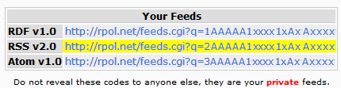

RPOL Notifier Options
Click the following link and log into RPOL to view your 'User Feeds'.
You will come to a page that contains a list of feeds which looks like this.

From your own 'RPOL User Feeds' page, copy and Paste
the Highlighted RSS v2.0 text into the following Text Area.
Note: This feed information is private for your personal account. Do not share it.
Game Ignore List
Check the Games that you would like to ignore.
(please enter your RSS feed above and click load)
Dont forget to check if nothing has been set/clear data and test